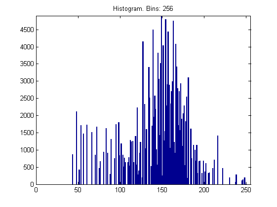
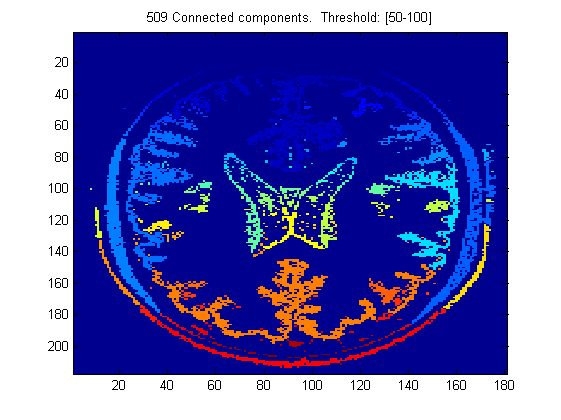

Build a Histogram
I experimented with two sets of images, turkeys, with light background and dark objects, and MRI brain, with dark background and white foreground. I also varied the number of histogram bins so as to observe its effects on the histogram. The images were thresholded over the entire spectrum, that is from 0 to 255.
In the first image, we can observe that the probability of a pixel being white is greater than that being dark. Hence, we see a histogram shifted towards the lower values of the spectrum.

In the second image, we observe that most of the pixels, those in the grass and house, have high intensity, while the turkeys and the fence contribute pixels having lower intensities. Therefore, the resulting histogram also has shifted towards the high intensity zone(from 100 - 200).
Connected Component Analysis
In this application also, I experimented with two sets of images, having different background and foreground contrasts. I also experimented using different thresholds for binarization in the two images.

In the turkeys example, an appropriate threshold from 0 to 100 yields the best possible connected components. If we use other sets of thresholds, the binary image contains greater noise and resulting connected components contain random artifacts.

In the MRI brain image, similarly thresholding plays an important role in connected component analysis. A thresholdd from 50 to 100 yields better connected components than other ranges. The connected components in the above images are color-coded.
Topological Denoising
In this application, I have again experimented on two sets of images. In the first one, shown in the left picture below, three different shapes are shown. The second example, shown in the right picture below, is the turkeys example from previous applications.
Notice that the original connected component analysis yields some degree of noise due to imperfect binarization of the original image. We can remove these spurious components based on the area of these components. Such a post-processing step yields much cleaner images, like those shown in the right. To yield better results than these, more advanced binarization algorithms are needed which generate perfect binary images at the outset. Another probable improvement is if we know properties of the connected components that the image contain, like aspect ratio, major/minor axis length etc.
Motion Detection
The steps in generating the third figure. First, the second image was subtracted from the first image and binarized. In the next step, connected component analysis was performed on this binary image in order to generate a label image. Finally, this label image was cleaned in order to generate the resulting image.
The challenges in designing such a system is that the final connected component might not cover the whole object itself, due to inhomogenous lighting conditions and noise.